How to program Gaussian splats: what one splat is, how the toys are built, and a small
language for writing your own splat equations, and toys that show pictures and read what
you type.
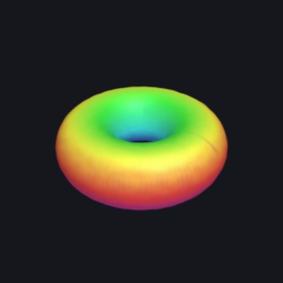
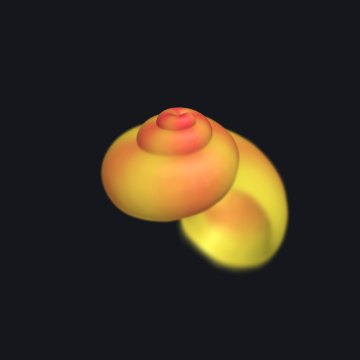
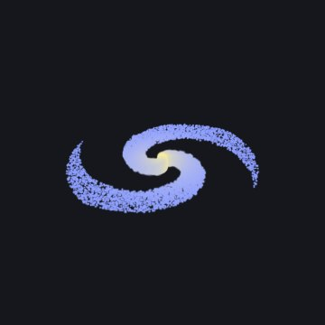
Every toy in Splashery is made
of Gaussian splats: tens of thousands of soft, colored blobs that blend into a
solid-looking thing. This manual is for anyone who knows some math and wants to make
splats do what they say. It goes level by level. You can stop after any level and still
have something to play with.
A splat is a small cloud of color floating in space. Up close it looks like a soft
ellipse, bright in the middle and fading at the edges. On its own it is nothing much. Put
thousands side by side and they melt into surfaces: a torus, a seashell, a cat.
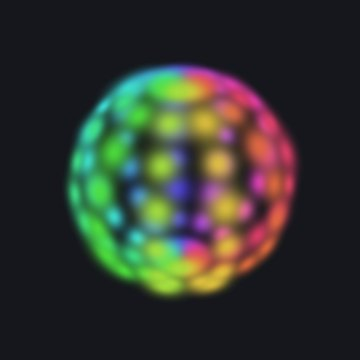
100 splats
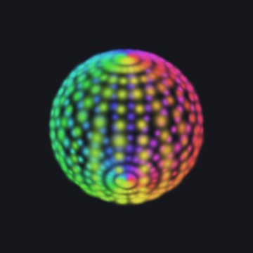
400 splats
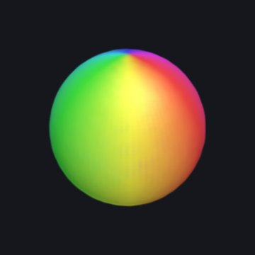
6,000 splats
The same sphere with more and more splats, made with the Splat equation toy. With few
splats you see each soft blob; with enough of them, they blend into one smooth surface.
The numbers in one splat
Each splat is described by a handful of numbers:
Part
Numbers
What it means
Center μ
3: x, y, z
Where the middle of the splat is.
Sizes s
3: s1, s2, s3
How far it spreads along each of its own three axes. Equal sizes make a ball; one
small size makes a flat disc.
Rotation q
4 (a quaternion)
Which way those three axes point.
Color
3: red, green, blue
Each from 0 to 1.
Opacity α
1
How solid its middle is, from 0 (clear) to 1 (solid).
That is 14 numbers per splat. A Splashery toy has about 60,000 splats on a small phone, up
to 280,000 on a strong computer, and up to 400,000 on the strongest devices (the site picks
for you). Many splat files also let a splat's color change a little with the direction you
look from; the toys you build here use one color per splat.
The Gaussian: a bell in three dimensions
The "Gaussian" in Gaussian splat is the bell curve, named after the mathematician Carl
Friedrich Gauss. In one dimension, a bell centered at μ with width σ
(sigma, the standard deviation) is
G(x) = exp(−(x − μ)² / 2σ²)
The bell curve. At one σ from the center it has fallen to about 0.61, at two σ to about
0.14, and at three σ to about 0.01, so a splat fades out within about three of its sizes.
In three dimensions the width becomes a 3-by-3 matrix Σ (capital sigma), called
the covariance, and the squared distance becomes a quadratic form. For a point
p in space, the splat's strength there is
G(p) = exp(−½ (p − μ)TΣ−1 (p − μ))
Where G is the same value, you are on the same "shell" around the center, and
those shells are ellipsoids: stretched and turned spheres.
The covariance, built from sizes and a rotation
Not every 3-by-3 matrix is a valid covariance. It has to be symmetric, and it has to be
positive definite (the bell must fall off in every direction). Instead of picking its nine
numbers directly, a splat builds it from its three sizes and its rotation:
Σ = RSSTRT,
where S =
s1000s2000s3
and R is the rotation matrix of the quaternion q. Read it right to
left, as a recipe for a shape: start with a round ball of size 1, stretch it by s1, s2 and s3 along x,
y and z, then turn it by R. Any sizes above zero and any
rotation give a valid covariance, which is exactly what you want when a computer is nudging
millions of numbers.
A covariance from sizes and a rotation, drawn in two dimensions: a round splat is
stretched along its own axes, then turned.
A worked example. Take sizes 0.3, 0.1 and 0.1, turned 30° about the
z axis. Then SST has 0.09, 0.01 and 0.01 on
its diagonal, and multiplying out RSSTRT gives
Σ ≈
0.0700.03500.0350.0300000.010
The top-left number is 0.09 cos²30° + 0.01 sin²30° = 0.07, and the ones beside it are
(0.09 − 0.01) sin 30° cos 30° ≈ 0.035. Those off-diagonal numbers are the tilt.
From 3D to the screen
To draw a splat, the renderer works out what its bell looks like from the camera. It first
turns the covariance into the camera's view, with the camera's rotation W. The
perspective of a camera is not a straight-line map, but close to one point it nearly is, and
its best straight-line stand-in there is a matrix J (the Jacobian of the
projection). Then the splat's covariance on the screen is
Σ′ = JWΣWTJT
keeping only its top-left 2-by-2 block. That 2-by-2 matrix is a flat bell on the screen: an
ellipse. Its eigenvectors are the directions of the ellipse's axes, and the square roots of
its eigenvalues are how far it spreads along them. This trick comes from EWA splatting
(Zwicker, Pfister, van Baar and Gross, 2001).
Sorting and blending, back to front
Splats are see-through at their edges, so the order they are drawn in matters. Each frame,
the splats are sorted by how far they are from the camera, and painted from the farthest to
the nearest. At each pixel, a splat's strength there is its opacity times its bell,
a = αG′, and it is laid over what is already there:
C ← ac + (1 − a) C
where c is the splat's color and C the pixel's color so far. Written
out for all the splats at once, counting from the nearest (i = 1) to the
farthest, the pixel's color is
C = Σiciai Πj < i (1 − aj)
Each splat shows as much as the splats in front of it let through. This is how the 2023
paper that started the craze, "3D Gaussian Splatting for Real-Time Radiance Field Rendering"
(Kerbl, Kopanas, Leimkühler and Drettakis), draws its scenes, and it is how Splashery draws
every toy.
Splats are painted from the back to the front, each one laid over the ones behind it.
Why the order matters in the toys. Splashery sorts the splats in the pose a toy was
built in, so a piece that moves keeps the order it had at rest. Turn a solid thing more
than a quarter turn and its far side can be drawn over its near side. The toys work around
it: the Splat equation toy, for one, builds its shape at twelve moments and shows the copy
nearest the moment you are at (Level 3).
Level 2How a toy is built
Nobody places Splashery's splats by hand. Most toys are recipes: short programs that
describe a toy with a kit of shapes, and the kit fills them with splats when you open the
toy. A recipe is a few kilobytes of code instead of megabytes of splats, and because every
random choice comes from a seed, it builds the same toy on every device.
Recipes are written in JavaScript. This level is a tour, so you can read one; the complete
guide is
docs/PACKS.md
in the source code.
Two places a toy lives
A toy's name and shelf go in a catalog entry (src/toys.js), and the toy
itself in a recipe in a pack file (src/packs/…js):
{
id: "little-windmill", // lower-case words joined by hyphens
label: "Little windmill", // its name on the shelf
category: "objects", // which shelf
kind: "kit",
pack: "my-pack", // loads src/packs/my-pack.js
}
A recipe has six basic parts, all optional except build (Level 5 adds
pictures, input and tiltLock, and
PACKS.md
has more, such as grab and drag for touch play):
build(k, o)
Describes the toy with the kit k. o holds the chosen
options.
options
Choices that rebuild the toy: a color, a style, a number of petals. They are saved
in links.
controls
Live values from 0 to 1: sliders, toggles that ease on and off, and pulses that jump
to 1 and fall back.
action
Which control a tap on the toy fires.
drive(t, c, out)
Runs every frame: from the time t and the controls c, it
sets how the parts move.
alive
true when the toy moves by itself, so frames keep coming.
Shapes from the kit
k.sphere(r), k.ellipsoid(a, b, c), k.box(w, h, d),
k.roundedBox(w, h, d), k.cylinder(r, h),
k.cone(r0, r1, h), k.torus(R, r), k.disc(r),
k.lathe(profile) (a vase or a bottle, turned around an axis),
k.tube(curve, radius) (a stem, an arm, a knot) and
k.param((u, v) => [x, y, z]), any surface you can write in two variables
(the same idea as Level 3; here u and v each run from 0 to 1), and
k.radial((dir) => r), a blobby surface given by its distance from the middle
in every direction. Nothing is drawn until you add a shape:
The kit shares the splats out between the shapes by their surface area, so the toy is evenly
dense; weight gives a small shape more (or share a fixed fraction
of all the splats). For free-form splats, like stars, sparks and crumbs,
k.cloud places them one by one. After build, the kit centers the
toy and scales it to fit the view, so you can model in any units.
Colors from functions
A color can be a fixed one ("#9c3b2c", or [r, g, b] with each from
0 to 1; there are no color names) or a function that the kit asks for every splat. It gets
the splat's place c.p, its surface direction c.n, its surface
coordinates c.u and c.v, and a random number and noise that come
from the seed. Return null to leave a hole:
A part is a group of shapes that moves as one solid piece:
k.part("lid", { pivot, axis }). Every frame, drive tells each part
where to be: an angle about its axis (a lid on a hinge, a wheel that spins), an
offset (a drawer that slides), a scale, or visible. A
toy may have up to 15 parts. The treasure chest's lid is a part on a hinge.
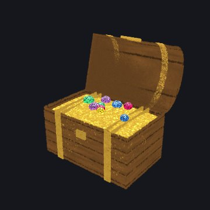
The treasure chest: its lid is a part on a hinge.
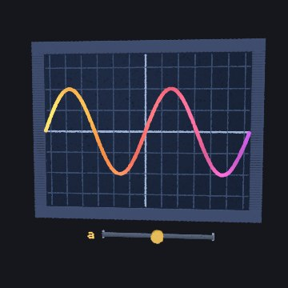
The graph plotter: the a slider is a control.
Behaviors
Some motion is too fine for parts: a flame that flickers, snow that falls, grass that sways.
A behavior moves each splat on its own on the graphics card:
kind: "flame", "twinkle", "sway",
"orbit", "fall", "wave" and more. Morphs give
each splat a second place, to: (c) => [x, y, z], and slide it there as one
of four channels goes from 0 to 1. The Splat equation toy's motion is made of morphs.
A small, complete recipe
Here is a whole toy: a little windmill whose sails turn with a Wind slider, and a tap that
blows a gust, spinning them once more around.
import { mix } from "../src/kit.js";
// A little windmill: a stone tower, a red cap, and four sails that turn in
// the wind. A tap blows a gust that spins them once more around.
export const RECIPES = {
"little-windmill": {
alive: true,
options: [{ key: "sails", label: "Sail color", type: "color", default: "#f2eee4" }],
controls: [
{ key: "wind", label: "Wind", type: "slider", default: 0.4 },
{ key: "gust", label: "Gust", type: "pulse", ease: 3 },
],
action: { key: "gust", label: "Blow a gust" },
drive(t, c, out) {
// The wind turns the sails; a gust adds one extra turn, eased in and
// out, so they end where they would have been anyway.
const g = c.gust > 0 ? 1 - c.gust : 0;
const extra = 2 * Math.PI * g * g * (3 - 2 * g);
out.parts.sails = { angle: t * (0.3 + 2 * c.wind) + extra };
},
build(k, o) {
// The tower: whitewashed stone, darker toward the ground.
k.add(k.cone(0.5, 0.3, 1.6), {
color: (c) => mix("#8b8f97", "#ece6d8", (c.p[1] + 0.8) / 1.6),
interior: 0.1,
core: "#6b5b4b",
});
// The cap.
k.add(k.cone(0.36, 0.02, 0.4), { pos: [0, 1.0, 0], color: "#9c3b2c" });
// The sails turn together, about an axis that points at you.
const sails = k.part("sails", { pivot: [0, 0.6, 0.42], axis: [0, 0, 1] });
k.add(k.sphere(0.07), { pos: [0, 0.6, 0.42], part: sails, color: "#4b3a2a" });
for (let i = 0; i < 4; i++) {
const a = (i * Math.PI) / 2;
k.add(k.box(0.16, 0.9, 0.02), {
pos: [-0.5 * Math.sin(a), 0.6 + 0.5 * Math.cos(a), 0.44],
rot: [0, 0, (a * 180) / Math.PI],
part: sails,
color: o.sails,
});
}
},
},
};
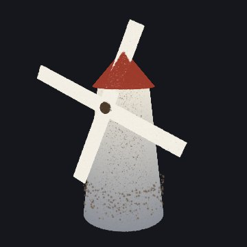
This recipe, built by the kit.
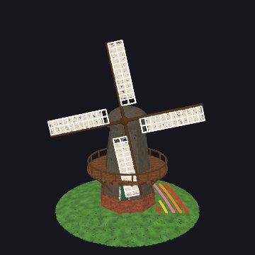
The Windmill on the shelf, a bigger toy built the same way.
Read it from the bottom up. build adds a cone for the tower (its color a
function of height), a smaller cone for the cap, and a part called "sails" with a hub and
four boxes, each turned a quarter turn more than the last. drive turns the
sails part: steadily with the wind, plus one extra turn while the gust pulse runs, eased
with the smoothstep curve 3g² − 2g³ so it starts and ends gently. A
full extra turn lands the sails where they would have been anyway, so nothing jumps when the
gust ends.
Level 3The splat equation language
Recipes are powerful, but they are code, and code from a stranger can do things you did not
ask for. The Splat equation toy on the math shelf gives you a smaller language that
is only math. You write where every splat goes and what color it is, as equations, and
nothing else can happen. That is why a link with your equations in it is safe to share.
Open it with any link in the gallery (Level 4). Type in the box under
Your own splat program in the Toy tab and press Splat it. The Program list has
eight famous shapes to start from.
The idea: every splat gets its own u and v
The toy lays out its splats on a grid of two numbers, u and v, each
running over a range you choose. Your equations turn each splat's (u,
v) into a place in space, (x, y, z). If
u goes around a circle and v around a smaller circle, the grid wraps
into a torus:
x = (2 + cos v)·cos u
y = sin v
z = (2 + cos v)·sin u
u = 0 .. 2pi
v = 0 .. 2pi
Each dot on the grid is one splat with its own (u, v). The equations
carry every dot to its place on the torus.
The fields
A program is a list of fields, each written name = value. You can type
one field or several, split by ; (a text file can put one on each line). Any
field you leave out keeps what is showing.
Field
What it is
If left out
x, y, z
Where each splat goes, as equations in u, v and t.
y points up.
Needed
u
The range of u, like 0 .. 2pi.
Needed
v
The range of v.
0 .. 1
hue
Color as a place on the color wheel: 0 is red, 1/6 yellow, 1/3 green, 1/2 cyan, 2/3
blue, 5/6 magenta, and 1 is red again. Any number works; only the part after the
point counts.
Use r, g, b
r, g, b
Color as red, green and blue, each from 0 to 1. Setting any of them turns
hue off; setting hue turns them off.
0.5 each (gray)
size
How big each splat is, in the same units as x, y and
z: about the σ of its bell. It may use u, v and
t.
0.05
count
How many splats: 100 to 10,000.
4000
spread
grid spaces the splats evenly; random scatters them at
random over the ranges (a galaxy, a firework).
grid
You can also write color for hue, red,
green and blue for r, g and
b, splats for count, x(u,v,t) for
x, and add notes after a #. Names can be in capitals or not. A
range can be written 0 .. 2pi, 0 to 2pi or 0, 2pi.
Expressions
The equations are read by the same small, safe reader as the Graph and Surface plotters. It
understands:
Numbers: 2, 0.5, .25.
Variables: u, v and t. Range ends and the count
are numbers only.
Constants: pi (or π) and e.
Operators: + − × ÷ ^, written + - * / ^ (and
**, ·, ², ³), with brackets
( ) and |x| for absolute value.
Functions: sin cos tan asin acos atan sinh cosh tanh exp log (natural;
ln too) log10 sqrt (or √) abs floor, and
min and max of two or more values.
Shortcuts: 2u means 2 × u, 3sin(u) and
(u + 1)(v − 1) multiply, and a function can skip its brackets on a simple
product: sin 2u, cos v.
Powers go first, then × and ÷, then + and −, and a power binds to the right:
2^3^2 is 29, and -u^2 is −(u²). Each field
can be up to 120 characters long.
The grammar
For the curious, here is the whole grammar. Words in quotes are typed as they are.
program = field "=" value { ( ";" | new line ) field "=" value }
field = "x" | "y" | "z" | "u" | "v" | "hue" | "r" | "g" | "b"
| "size" | "count" | "spread"
value = sum (x, y, z, hue, r, g, b, size)
| sum ".." sum (u, v: numbers only)
| sum (count: a number only)
| "grid" | "random" (spread)
sum = product { ( "+" | "-" ) product }
product = signed { ( "*" | "/" ) signed | power } (nothing between: 2u)
signed = { "-" | "+" } power
power = atom [ "^" signed ]
atom = number | "u" | "v" | "t" | "pi" | "e"
| function "(" sum { "," sum } ")"
| function atom { atom } (sin 2u)
| "(" sum ")" | "|" sum "|"
Time
t is time. A tap on the toy plays it from 0 to 2π in about 4 seconds, and the
t slider in the Toy tab holds it anywhere in between. Anything with t in
it moves: u + t turns a shape, sin(t) breathes, and
sin(3u − t) sends a wave around.
Behind the scenes, the toy builds your shape at 12 moments, t = 0, π/6, 2π/6 and
so on, and each copy slides every splat in a straight line to its place in the next copy (a
morph, Level 2), so the motion is exact at those 12 moments and smooth in between. A shape
that turns dips very slightly inward between moments, about 3 percent.
Make it loop. Because t ends at 2π, a shape made of sin(t),
cos(t) and angles like u + t ends exactly where it began. A
shape with plain t in it (like y = t) jumps back at the end.
sin(t/2) goes out and back once; sin(2t) twice.
A program without t stands still. Then a tap clears it and draws the splats again
one by one, in the order they are made: the first value of u with every
v, then the next u, and so on.
What the toy does for you
It fits the view. The whole shape (at every moment of t) is scaled to
fit, so your units don't matter; only the sizes compared with the shape do.
It spaces the grid. With spread = grid, the side of the shape that is
longer gets more splats, so they sit about evenly apart. A shape that uses only
u is a curve, and all the splats go along it.
It lights surfaces. For a surface, each splat is a flat disc facing out from it
(along the cross product of its slopes in u and v), lit from above.
The Light and shade switch turns the lighting off, so you see your colors exactly.
It skips impossible points. Where an equation has no value (the square root of a
negative number, a division by zero), that splat is left out. So are points that shoot off
far beyond the rest.
It explains mistakes. Each field that can't be read gets one plain message, like
“z: That can't be drawn: I don't know “q”.”, and the shape on the stage stays as it
was.
Why it is safe
The reader never runs what you type. It breaks the text into numbers, the letters
u, v and t, the names in the lists above and the signs, and
builds a small tree of arithmetic from them. There is no way to name anything else, so the
worst a program can do is draw a strange shape. Your program lives in the toy's link ("Copy
link" in the Share tab), so you can send it to anyone.
Level 4A gallery of programs
The first eight are the toy's own programs; the rest are small ideas to copy and change.
Each button opens the toy with that program; then tap it to play t. While the toy
is being tried out, it is on the shelf only when Splashery is opened with
?labs=1, but these links always open it.
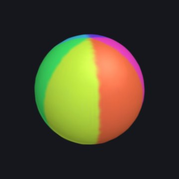
Sphere
A sphere from two angles, u around and v from pole to pole, spinning with u + t. Six
stripes from floor(6u/(2pi)).
x = sin(v)cos(u + t)
y = cos(v)
z = sin(v)sin(u + t)
u = 0 .. 2pi
v = 0 .. pi
hue = floor(6u/(2pi))/6 + 0.04
size = 0.035
count = 7000
Color from r, g and b: three cosines a third of a turn apart make a rainbow along u.
x = u
y = 0.4sin(2u - t)
z = v
u = -3 .. 3
v = -0.4 .. 0.4
r = 0.5 + 0.5cos(u)
g = 0.5 + 0.5cos(u - 2)
b = 0.5 + 0.5cos(u + 2)
size = 0.05
count = 4000
Things to try. Change a number and see what moves. Swap cos and
sin. Put t somewhere new. Make count small and
size big to see the single splats. Try spread = random on a
surface. Give a sphere a hue of floor(8v/pi)/8.
Level 5Pictures, screens and your own input
The toys in Level 2 are built from shapes. Some toys show something that is not a shape: a
page of a PDF, a photo, a GIF, a video, or something you type or draw. Three additions to a
recipe make them: picture sheets, an input panel and a few
view settings. They are still Gaussian splats, all the way down. The toys on the
Pictures and pages shelf are being tried out, so they are on the shelf only when Splashery
is opened with ?labs=1.
Picture sheets: a page, a photo, a GIF, a video
A sheet is a flat place in a toy where a picture shows:
k.sheet({ id, center, width, height }). The kit draws nothing there. After the
build, the site opens the picture and turns it into splats on the sheet, in a background
worker so the page stays smooth. A PDF page becomes a smooth sheet of large soft splats in
the paper's color, with a small splat of its own color wherever the page differs from the
paper, which is the ink (method: "ink"); in a photo, each pixel becomes a flat
splat ("pixels"); a GIF or a video becomes a screen that is redrawn on every
frame ("screen"). The site picks the method from the kind of file. It rebuilds
a sheet finer as you zoom in, and frees the pages you have left, so a book of 200 pages does
not need 200 pages of splats.
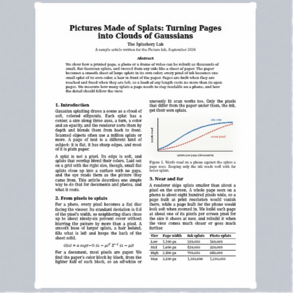
A PDF page (the Picture lab)
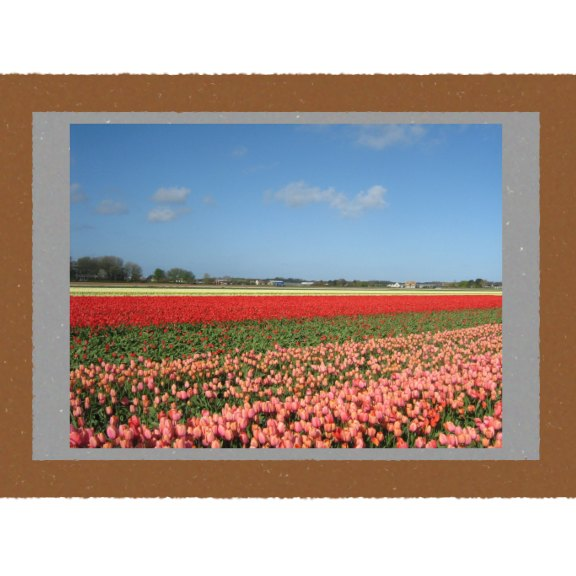
The recipe below: a photo in a frame
Both pictures are made of splats. Photo: "Tulip field" by DennisM2, CC0. The article is
our own sample text.
Three parts of a recipe work together:
pictures: { sample, accept } names what shows until you open your own (the
sample's address) and which kinds a visitor may open: "pdf",
"image", "gif", "video".
drive may choose the page of each sheet with
out.sheets[id] = { page, visible }. Pages count from 0, and a page that does
not exist shows nothing. A sheet that is not visible is not built. Without it, every sheet
shows the current page.
info.data.pictures is the toy's view of the media: page,
count, kind, name, playing and the
functions next(), prev(), go(n) and
togglePlay().
A whole picture toy, in a few lines. Its input gives the Toy tab a button that
opens a photo, a GIF or a video; the rest of the toy is a card and four wooden bars:
import { smoothstep } from "../src/kit.js";
// Two small picture toys for Level 5 of the Tinkerer's Manual: a framed photo
// that opens your own picture, and a little book whose page turns like paper.
export const RECIPES = {
"little-frame": {
turntable: false,
tiltLock: true, // a drag only spins it left and right
pictures: {
sample: () => "assets/toys/picture-lab/photo.jpg", // shown until you open your own
accept: ["image", "gif", "video"],
},
input: {
title: "Your own picture",
media: { accept: ["image", "gif", "video"] },
note: "Open a photo, a GIF or a video. Files stay on this device.",
},
build(k) {
// The picture: a sheet, filled with splats after the build.
k.sheet({ id: "photo", center: [0, 0, 0.03], width: 1.5, height: 1 });
// A gray card behind it, and four wooden bars around it.
k.add(k.box(1.6, 1.1, 0.02), { pos: [0, 0, -0.02], color: "#9a9a9a" });
for (const [w, h, x, y] of [
[1.8, 0.1, 0, 0.6],
[1.8, 0.1, 0, -0.6],
[0.1, 1.1, -0.85, 0],
[0.1, 1.1, 0.85, 0],
])
k.add(k.box(w, h, 0.1), { pos: [x, y, 0], color: "#8a5a34" });
},
},
Turning a page
A page that turns like paper is a sheet with leaf: slot (a slot from 0 to 9)
and a spine to turn about: k.spine({ at, axis, dir }) gives the spine's place,
its direction, and the direction from it along the pages when they lie flat. Each frame,
drive sets out.leaves[slot] = { angle, curl }: the
angle in radians (0 lying flat, π turned all the way over) and the
curl, how much the page bends along a circular arc (a negative number lets the
free edge lag behind, like paper in air). Every splat of the page turns with the curve at
its place, so it stays a solid sheet at every angle, which a page bent with soft regions
would not.
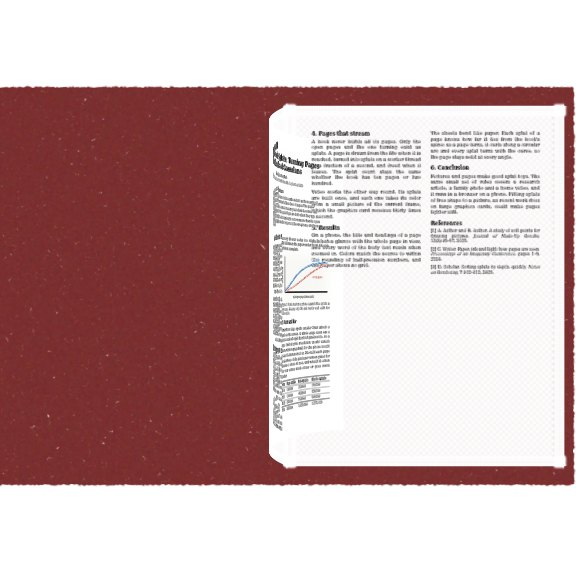
The little book below, halfway through a turn. The next page is already there under the
turning one.
The little book below uses a pulse control for the turn, the way Level 2's gust does. The
page under the turning one is built ahead of time (a sheet is built only while it is
visible, so a page that shows up halfway would make the turn wait), and the page number
moves on when the turn ends. Keep a turning sheet on the body (part 0), because a part's own
turn would replace the leaf's. The far side of the turning page shows the page in mirror
image, like tracing paper, until it lands.
"little-book": {
turntable: false,
tiltLock: true,
pictures: { sample: () => "assets/toys/picture-lab/article.pdf", accept: ["pdf"] },
input: { title: "Your own book", media: { accept: ["pdf"] }, note: "Open a PDF." },
controls: [{ key: "turn", label: "Turn the page", type: "pulse", ease: 1.2 }],
action: { key: "turn", label: "Turn the page" },
drive(t, c, out, info) {
const pics = info.data?.pictures; // { page, count, go(n), next(), prev(), ... }
// The page changes when the turn ends, and the turning page lands on the left.
const turning = c.turn > 0;
if (BOOK.turning && !turning && pics) pics.go(pics.page + 1);
BOOK.turning = turning;
const page = pics?.page ?? 0;
// The pulse falls from 1 to 0: the page swings from 0 to a half turn (pi)
// about the spine, and its free edge lags behind, like paper.
const s = turning ? smoothstep(0, 1, 1 - c.turn) : 0;
out.leaves = [{ angle: Math.PI * s, curl: -1.2 * Math.sin(Math.PI * s) }];
out.sheets = {
// Once the turn starts, the left page is the one that is about to land on it.
left: { page: turning ? page : page - 1 }, // a page out of range shows nothing
under: { page: page + 1 }, // built ahead, and uncovered as the page lifts
front: { page }, // the turning page (its far side shows in mirror image)
};
// It is built, but hidden, until the turning page lands on it.
out.parts.leftPage = { visible: turning ? 0 : 1 };
},
build(k) {
BOOK.turning = false;
k.spine({ at: [0, 0, 0], axis: [0, 1, 0], dir: [1, 0, 0] });
const W = 1.4;
const H = 1.9;
const leftPage = k.part("leftPage");
const page = { width: W, height: H };
k.sheet({ id: "left", ...page, part: leftPage, center: [-W / 2, 0, 0], align: [1, 0] });
k.sheet({ id: "under", ...page, center: [W / 2, 0, 0], align: [-1, 0] });
// The turning page: a sheet on leaf slot 0, a hair in front of the others.
k.sheet({ id: "front", ...page, center: [W / 2, 0, 0.008], align: [-1, 0], leaf: 0 });
// The cover, behind the pages.
k.add(k.box(2 * W + 0.1, H + 0.1, 0.03), { pos: [0, 0, -0.03], color: "#7a2f2f" });
},
},
};
// Whether the page was turning in the last frame.
const BOOK = { turning: false };
Your own input: typing, drawing, opening a file
A recipe can ask for something from the visitor. Its input adds a panel to the
Toy tab, in one of three forms:
Typing: a text box and a button, and maybe a button that opens a text file
(fileButton, accept). The Splat equation toy of Level 3 is one;
so is the Word vectors toy, where you type king − man + woman.
Drawing: pad: { cols, rows, max, button } adds a small grid you paint
with a soft brush, and a button that hands the drawing to read as the text
"pad:…" (one number for each cell, row by row). The CNN toy's "3D, draw a
digit" view reads the digit you draw.
Opening a picture: media: { accept } adds an Open a file…
button, a field for a web address, the page buttons (or play and pause for a video) and a
way back to the sample. Level 5's picture toys use it.
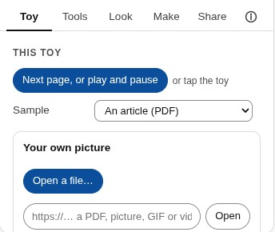
The input panel of a picture toy, in the Toy tab. Files are read on your device; nothing
is uploaded.
For typing and drawing, read(text, fileName) turns what came in into option
values, or throws an Error whose message the panel shows in place; and
shown() says what is showing now. Keep what goes into options small: options
are saved in the toy's link. Here is a whole toy with a typed input, a row of bars for the
numbers you give it:
// A small toy with its own typed input, for Level 5 of the Tinkerer's Manual:
// type some numbers and the toy stands them up as bars.
const LIMIT = 12;
const COLORS = ["#e8384f", "#ffc233", "#1fb59a", "#4dabf7"];
export const RECIPES = {
"little-bars": {
options: [
{
key: "numbers",
label: "Your numbers",
type: "text",
default: "3 1 4 1 5 9 2 6",
hidden: true,
},
],
input: {
title: "Your own numbers",
placeholder: "3 1 4 1 5 9 2 6",
button: "Show them",
fileButton: "Open a text file…",
accept: ".txt,.csv",
note: `Type up to ${LIMIT} numbers from 0 to 20, separated by spaces or commas, or open a text file with them.`,
// Turns the typed text into option values, or throws a message that the panel shows.
async read(text) {
const list = String(text).match(/-?\d+(\.\d+)?/g) || [];
if (list.length === 0) throw new Error("Type some numbers, like 3 1 4 1 5.");
if (list.length > LIMIT) throw new Error(`That is more than ${LIMIT} numbers.`);
if (list.some((n) => n < 0 || n > 20)) throw new Error("Use numbers from 0 to 20.");
return { numbers: list.join(" ") };
},
shown: () => "Your numbers",
},
build(k, o) {
const values = String(o.numbers).split(" ").map(Number);
values.forEach((v, i) => {
const h = 0.05 + v / 10;
k.add(k.box(0.14, h, 0.14), {
pos: [(i - (values.length - 1) / 2) * 0.2, h / 2, 0],
color: COLORS[i % COLORS.length],
});
});
},
},
};
The Screen and the Gaussian splatting toy
Two more toys put these to work: the Screen on the Pictures and pages shelf, and Gaussian
splatting on the AI and computing shelf.
The Screen shows a video or a GIF on a screen in one of four styles: an old TV, a
flat TV, a cinema with curtains and a hologram. Its picture is one sheet with
method: "screen"; the knobs, the curtains and the glass are ordinary kit parts.
A tap switches it on, and then plays and pauses; the speaker button in the top bar turns the
sound on. You can open your own video or GIF.
The Gaussian splatting toy lets you watch how a photo becomes splats. Its
Training view fits 2,400 flat (two-dimensional) Gaussians to a photo (a strawberry,
or your own), by gradient descent in a background worker: the splats start as random specks
and, step by step, they slide, stretch and change color until together they are the picture.
It draws them exactly as the site's renderer does (front to back, with the bell of Level 1),
so what you see is the real fit. One splat lets you set the sizes, the opacity and
the color of a single splat and turn it (Level 1's numbers); Many splats builds a
small rubber duck from kit shapes and then shrinks every splat to a dot, so you see the
splats that make it; and Sorting shows the splats of a ball appearing one by one, in
the back-to-front order a camera draws them.
The One splat view: a single splat with its three sizes drawn as axes (Level 1's
s1, s2 and s3).
Steering the view: the top bar and the tilt lock
Three round buttons sit in the top bar, beside the sound and help buttons. They control how
you look at the toy on show, and none of them changes the toy.
Reset view (the circular arrow) puts the camera back where the toy starts. The
R key and a double tap do the same, and so does the button in the Tools tab.
Tilt lock (the padlock) makes a drag turn a toy only left and right, so a flat toy
such as a page, a photo or a screen stays facing you. Zooming, panning and pinching still
work. Your choice is remembered for that toy for the rest of your visit. In a recipe, it
is the flag tiltLock: true, and every toy on the Pictures and pages shelf
sets it. A link keeps the camera it was saved with, and the lock then holds that tilt.
Turntable (the record player) switches the slow turn that a toy does when nobody is
touching it. It is the same setting as Turntable when idle in the Toy tab, and this
device remembers it. A recipe can opt out with turntable: false, as a page
does. If your device asks for less motion, the turn stays off and the button is disabled.
Two fingers on a touch screen zoom. They roll the toy only after a clear twist (about 17
degrees) and turn it only when they move together, so a normal pinch never spins what you
are looking at. With the labs switch on (lane UI r2), a two-finger drag moves the toy across
the screen instead of turning it, as do Shift or Option/Alt and a drag on a computer; ↺, R
or a double-tap puts it back in the middle.
What comes later: Code a toy
The splat equation language can place and color splats, but it can't give a toy parts,
controls or a tap of its own. For that you need a full recipe (Level 2). Splashery's plan
includes a Toy Workshop where you will be able to write one: a Code a toy
editor that builds and shows your recipe as you type.
Sharing those toys will work differently from sharing equations. A recipe is real
JavaScript, and a page that ran a stranger's JavaScript straight from a link could be made
to do things its visitor never agreed to. So a coded toy will be shared as a
submission: it is checked and read by a person before it joins the shelf, the way
every toy in Splashery is today. Equations stay the quick way to share; recipes are the deep
one.
x = … y = … z = … # in u, v and t (y is up)
u = 0 .. 2pi # ranges: numbers only
v = 0 .. pi # default 0 .. 1
hue = … # 0 red, 1/3 green, 2/3 blue
r = … g = … b = … # or colors from 0 to 1
size = 0.05 # about the bell's σ
count = 4000 # 100 to 10,000
spread = grid # or random
Functions: sin, cos, tan, asin, acos, atan, sinh, cosh, tanh, exp, log (ln), log10,
sqrt, abs, floor, min, max. Constants: pi, e. Time: t runs from 0
to 2π per tap. At most 120 characters a field.
A picture toy
pictures: { sample: () => "assets/…", accept: ["pdf", "image", "gif", "video"] },
input: { title, media: { accept } }, // or placeholder, button, read, shown; or pad
tiltLock: true, // a drag turns it only left and right
build(k) { k.sheet({ id, center, width, height, leaf }); k.spine({ at, axis, dir }); },
drive(t, c, out, info) {
out.sheets[id] = { page, visible }; // pages count from 0
out.leaves[slot] = { angle, curl }; // radians; 0 flat, pi turned over
info.data.pictures // page, count, go(n), next(), prev(), togglePlay()
}